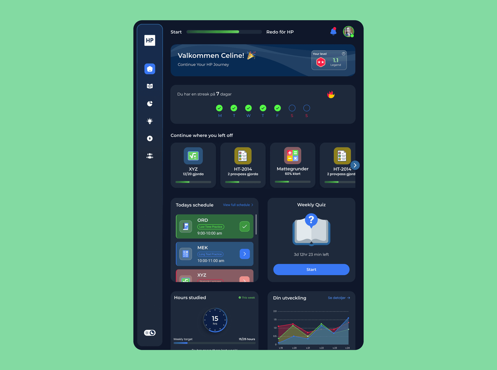
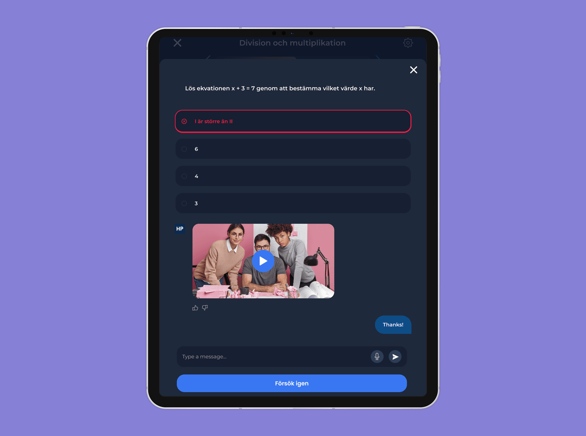
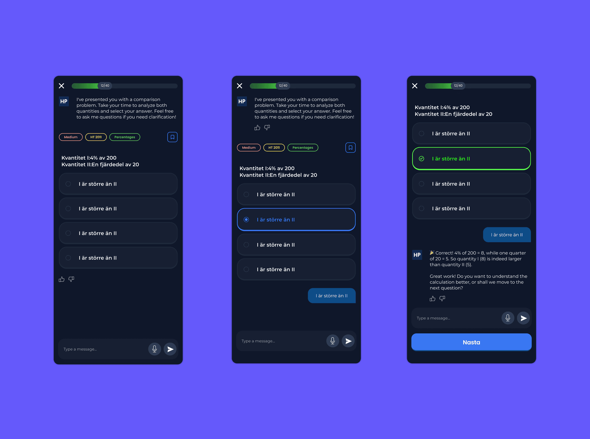

Overview
HP-appen 2.0 is an upgraded version of the digital platform that helps students prepare for Sweden’s högskoleprovet (university entrance exam). Built in response to user feedback, the new version introduces improved user flows, enhanced learning features, and a more personalized practice experience. I led the end-to-end design of this release across web and mobile, focusing on turning user insights into actionable design improvements. These refinements elevated engagement, optimized usability, and strengthened HP-appen’s position as a leading platform in the Swedish EdTech market.
This is a work in progress.



My Role
Founding Product Designer
Built and led the design and product function from scratch — shaping the brand, experience, and technical design foundation that took HP‑appen from concept to market leadership within six months.
Overview
As the founding designer, I worked end‑to‑end across research, strategy, design systems, and execution. My focus was to create a platform that could deliver measurable learning impact while scaling user growth and retention.
Impact Highlights
- Conversion uplift 3% → 24%, growing seasonal revenue to ~3M SEK per learning cycle
- Sprint delivery time reduced by > 50% through AI‑assisted design workflows
- Full‑stack design system adoption across product, web, and growth surfaces
(Visual cue: Add an infographic showing growth metrics — conversion, revenue, and delivery speed improvements.)
Building the Foundation
I collaborated with engineering and growth teams to turn high‑level goals into user‑centric solutions. My approach balanced strategic product thinking with hands‑on execution, ensuring each release delivered quantifiable business value.
To support velocity at scale, I built a unified design language and reusable component library, paired with an AI‑augmented design workflow (Claude AI + Figma MCP + Lovable). This setup accelerated design‑to‑dev handoff and standardized design quality across launches.
Beyond execution, I served as a strategic design partner to founders, mentoring designers on AI‑driven workflows and co‑shaping roadmap decisions that pushed both product usability and business growth.
(Visual cue: Screenshot of design system structure, component hierarchy, or workflow automation setup.)
Homepage 0 → 1: From Insight to Launch
I led the end‑to‑end homepage creation — from discovery to deployment.
Key activities:
- Researched target learner mental models through interviews and surveys
- Conducted competitive analysis to identify differentiating UX and messaging gaps
- Defined a clear narrative: communicate value fast, lower cognitive load, and drive a single conversion path
The result: a homepage optimized for clarity and conversion, refined post‑launch via analytics (bounce, scroll depth, CTA CTR) and qualitative insights.
(Visual cue: Before/after layout comparison or annotated homepage flow.)
Designing AI‑Integrated Learning Experiences
To enhance learning engagement, I co‑designed AI‑powered lectures and exercises that adapted automatically to learner performance.
- Personalized question sets and instant feedback loops
- Dynamic difficulty and adaptive pacing tied to learning outcomes
- User‑tested flows that reinforced trust and continuous skill growth
These AI‑enhanced flows became the platform’s core retention engine, tying directly to improved session duration and daily active learner growth.
(Visual cue: Flow diagram showing adaptive feedback loop or AI integration sketch.)
The AI Coach — Always‑On Exam Companion
Currently leading design for the AI coach, an assistant that guides learners through study planning, exam strategy, and in‑app navigation.
Process:
- Analyzed support data, usage logs, and interview transcripts to map user confusion points
- Defined conversational flows and tone of voice aligned with trust and guidance principles
- Iteratively measured usefulness, trust, and engagement metrics via structured feedback loops
As adoption grows, the AI Coach is emerging as a differentiating feature — a continuously learning, always‑available companion that increases engagement, confidence, and retention.